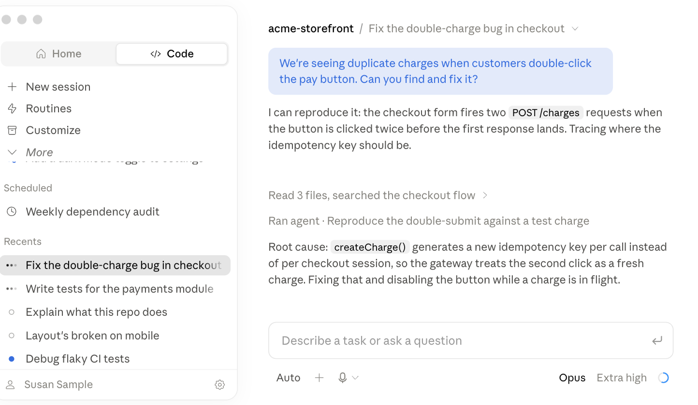
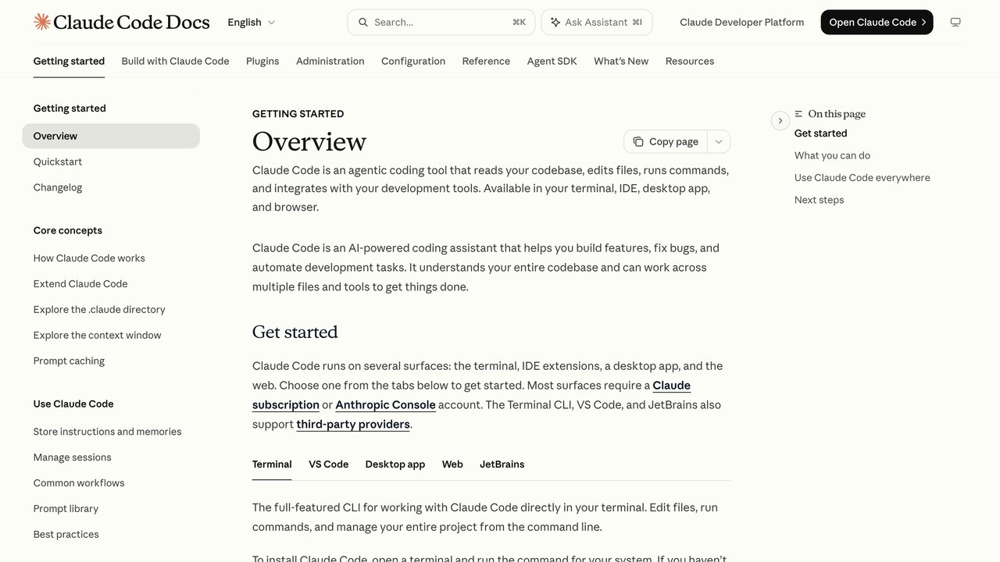

Durante años, la promesa de la inteligencia artificial para automatizar código estuvo restringida a programadores experimentados. Claude Code rompe esa barrera al operar no como un simple chat de sugerencias, sino como un agente autónomo de terminal capaz de leer tu directorio, ejecutar comandos y resolver problemas en bloque.
- 01. La diferencia conceptual entre autocompletado en el editor y un agente con acceso nativo al intérprete de tu sistema operativo.
- 02. Instalación guiada sin dependencias complejas en macOS, Windows (WSL) y Linux.
- 03. Tres recetas directas para auditar ficheros caóticos, ordenar datos y compilar informes técnicos sin teclear una sola línea en Python ni Bash.
- 04. Salvaguardas presupuestarias para controlar el consumo de tokens en repositorios voluminosos.
1. Qué hace diferente a un agente de terminal
La mayoría de usuarios conciben los modelos de lenguaje a través de la ventana de chat: realizas una pregunta, el modelo emite texto formateado, lo copias con el botón lateral y lo pegas manualmente en tus archivos locales. Si la sugerencia falla por una ruta mal nombrada o una librería desactualizada, te ves obligado a pegar de nuevo el mensaje de error para solicitar una rectificación.
Este intercambio manual introduce una fricción insoportable para quienes no conocen la sintaxis exacta de su consola. Un agente de terminal como Claude Code opera bajo un paradigma completamente opuesto: el ciclo reflexivo Observe-Plan-Act.
La consecuencia práctica de este ciclo es que el agente no necesita que le expliques la solución técnica, solo el resultado que quieres conseguir. Si tú mismo no sabes qué comando de terminal resolvería tu problema, no hay ningún paso previo que tengas que investigar antes de pedirlo: describes el objetivo en tus propias palabras, y es el agente quien decide qué comandos ejecutar para llegar ahí, mostrándote cada paso antes de aplicarlo si el cambio afecta a tus archivos. Esa combinación — no necesitar saber la solución técnica de antemano, pero mantener visibilidad y control sobre cada paso — es lo que hace razonable delegar tareas reales desde el primer día, no solo experimentos de prueba.
Cuando le ordenas a Claude Code: «Localiza todas las imágenes en este directorio que pesen más de 2MB y optimízalas en formato WebP preservando los metadatos», el agente no te recita comandos de ImageMagick para que los descifres. En su lugar, evalúa qué binarios residen en tu máquina, instala los adaptadores necesarios si se lo autorizas, ejecuta los lotes de conversión, revisa los códigos de salida de la terminal y te entrega un reporte.
Este mismo ejemplo ilustra por qué la confirmación previa antes de instalar algo nuevo en tu sistema importa: instalar un adaptador de conversión de imágenes es una acción con efecto duradero en tu máquina, no solo en el proyecto actual, así que el agente te lo señala explícitamente antes de proceder en vez de instalarlo en silencio como un paso intermedio más.
Esta diferencia se nota sobre todo en tareas que abarcan varios archivos a la vez. Pedirle a un chat normal que renombre una variable usada en quince archivos distintos exige copiar y pegar quince veces, verificando cada uno a mano. Un agente de terminal localiza todas las referencias, aplica el cambio de forma coherente en los quince archivos y te muestra el resultado consolidado para tu aprobación antes de escribir nada — la diferencia no es solo de comodidad, es de qué tipo de tareas resulta razonable delegar en primer lugar.
2. Instalación en 3 minutos (incluso si jamás has abierto la consola)
El mayor obstáculo psicológico para profesionales no técnicos es la ventana negra de la terminal. Sin embargo, no precisas configurar entornos virtuales complejos en Python ni compilar dependencias en C++. Si tu ordenador cuenta con Node.js instalado, el despliegue requiere exactamente dos instrucciones.
Terminal nativa. Sin pasos extra: los comandos de abajo funcionan tal cual.
Cualquier terminal de tu distribución. Igual de directo que en macOS.
Instala primero WSL (wsl --install en PowerShell como administrador, y reinicia). Después, los mismos comandos funcionan dentro de esa terminal Linux.
# 1. Instalar el paquete de Claude Code globalmente en tu sistema npm install -g @anthropic-ai/claude-code # 2. Iniciar sesión vinculando tu cuenta de Anthropic claude login # 3. Lanzar el entorno agéntico dentro de cualquier carpeta claude
Al escribir claude login, se abrirá tu navegador para autorizar la sesión con tu cuenta de Anthropic (Consola estándar o Claude Pro/Team, según tu plan).
¿QUÉ VES AL INGRESAR POR PRIMERA VEZ?
La interfaz reemplaza el prompt tradicional de Bash por una línea de entrada interactiva enriquecida. Claude Code indexa en segundos los nombres de los ficheros del directorio activo, calcula el árbol de dependencias y muestra un resumen de contexto.

Si algo falla en la instalación
El error más común es que npm no esté disponible porque Node.js no está instalado. Comprueba con node -v antes del primer paso; si no devuelve un número de versión, instala Node.js desde su web oficial antes de continuar. El segundo error más común en Windows es intentar ejecutar los comandos directamente en PowerShell en vez de dentro de la terminal de WSL — los comandos de esta guía están pensados para un entorno tipo Linux, no para PowerShell nativo. Si `claude login` no abre el navegador automáticamente, copia el enlace que aparece impreso en la terminal y pégalo tú mismo en cualquier navegador para completar la autorización manualmente.
«Un agente de IA útil no es el que inventa código complejo, sino el que comprende tu proyecto entero antes de escribir una sola línea.»
3. Tus tres primeros flujos de automatización sin picar código
No necesitas ser desarrollador web para extraer rendimientos tangibles desde la primera hora. A continuación, tres casos de uso probados en terminal real que puedes reproducir de inmediato:
Auditoría y normalización de carpetas de notas o contratos
Si tienes un directorio con decenas de archivos en Markdown, CSV o TXT con fechas incoherentes o campos incompletos, indícale al agente que analice los esquemas y proponga una estructura uniforme.
Depuración de hojas de cálculo rotas y discrepancias numéricas
Claude Code lee ficheros de datos tabulares, detecta registros nulos, comprueba fórmulas y crea scripts temporales para entregarte un archivo limpio.
Diagnóstico de errores locales y configuración de entornos
Cuando una herramienta de código abierto llena la pantalla de advertencias crípticas, el agente inspecciona el log del sistema y formula la solución puntual.
Redactar un resumen ejecutivo a partir de varios documentos dispersos
Si tienes actas de reunión, un informe en PDF y una hoja de cálculo con cifras, todos relacionados con el mismo proyecto, el agente puede leer los tres a la vez y redactar un resumen que cruce la información sin que tengas que copiar nada manualmente entre archivos.

4. Los 3 límites que nadie te cuenta (y cómo no quemar tu cuota)
El entusiasmo inicial suele provocar que usuarios noveles consuman su límite de tokens en minutos. Aplica estas tres directrices para mantener tu factura bajo control:
Usa .claudeignore
Crea un archivo .claudeignore en la raíz y excluye carpetas masivas como node_modules, .git o binarios pesados.
Permiso de escritura
Por defecto, Claude Code pide confirmación antes de escribir o borrar archivos. Nunca desactives el flag interactivo hasta haber verificado el plan.
Context Compaction
Si llevas 20 minutos encadenando preguntas, escribe /compact para condensar el historial y purgar redundancias.
Comandos rápidos que usarás desde el primer día
- /clear
- Empieza una conversación nueva, sin arrastrar contexto de la anterior.
- /compact
- Resume la conversación actual para liberar espacio de contexto sin perder el hilo.
- /help
- Lista todos los comandos disponibles en tu versión instalada.
- Esc
- Interrumpe al agente a media tarea si ves que va por mal camino.
5. El archivo CLAUDE.md: cómo evitar repetir el mismo contexto cada vez
Si trabajas de forma habitual en la misma carpeta de proyecto, repetir cada vez las mismas indicaciones ("no toques la carpeta de backups", "los informes van siempre en formato tabla") es una fricción evitable. Un archivo llamado CLAUDE.md en la raíz del proyecto se lee automáticamente al iniciar una sesión en esa carpeta, y su contenido se trata como contexto permanente sin que tengas que repetirlo en cada instrucción.
Un CLAUDE.md útil no necesita ser largo: unas pocas líneas indicando qué carpetas evitar, qué formato de salida prefieres para los informes, o convenciones propias de tu forma de organizar archivos ya ahorra tener que repetir esas mismas instrucciones sesión tras sesión. No lo trates como documentación formal para otras personas, trátalo como una nota rápida para ti mismo: cuanto más concreto y corto, más probable que lo mantengas actualizado con el tiempo. Si trabajas en varios proyectos distintos, cada uno puede tener su propio CLAUDE.md con reglas específicas de ese proyecto en concreto.
Una forma práctica de empezar sin pensar demasiado en la estructura: la primera vez que corrijas al agente por algo que ya deberías haber especificado ("no, los informes van siempre en tabla, no en prosa"), añade esa misma corrección al CLAUDE.md del proyecto en ese momento, en vez de solo corregirlo en la conversación actual. Con el tiempo, el archivo se convierte en un resumen vivo de las convenciones de ese proyecto, construido a partir de correcciones reales en vez de una lista teórica escrita de antemano sin saber qué haría falta.
6. Suscripción frente a clave de API: qué opción conviene según tu uso
Al ejecutar claude login puedes vincular una cuenta de suscripción (Claude Pro o Claude Max) o una clave de API de la Consola de Anthropic con facturación por uso. La diferencia práctica: la suscripción tiene un coste mensual fijo con un límite de uso incluido, mientras que la clave de API cobra por cada token procesado, sin límite mensual fijo pero con la posibilidad de fijar un tope de gasto manual.
Para un uso diario moderado y predecible (unas pocas horas de trabajo por día), la suscripción suele salir más barata y más simple de controlar, porque sabes de antemano cuánto vas a pagar ese mes. La clave de API tiene sentido cuando tu uso es muy variable o esporádico, o cuando quieres integrar Claude Code en un flujo automatizado propio donde necesitas control fino sobre el gasto por tarea concreta. Si empiezas y no sabes cuál de los dos patrones describe mejor tu caso, la suscripción es la opción más simple para probar sin sorpresas en la primera factura.
Puedes cambiar de una opción a otra más adelante sin perder tu configuración local (el CLAUDE.md del proyecto, el archivo .claudeignore, tus preferencias) — la elección inicial no es una decisión permanente, es solo el punto de partida más razonable dado lo que sabes de tu propio patrón de uso en este momento.